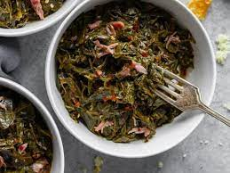

Instant Pot Collard Greens

Quick Souther-style collard greens made in your instant Pot
Ingredients
- 1 bunch of collard greens
- 4 thick slices bacon, cut into 1-inch pieces
- 4 cups water
- 2 tablespoons white vinegar
- 4 cups chicken broth
- salt to taste
Steps
- Rinse collard greens; remove and discard thick parts of stems. Chop greens to desired size.
- Turn on a multi-functional pressure cooker (such as Instant Pot®) and select Saute function. Cook bacon until brown and crisp, about 5 minutes. Turn off Saute function. Pour in water and vinegar. Scrape the bottom of the pot to release stuck bits of bacon. Add collard greens and stir to coat. Pour in chicken broth and season with salt. Close and lock the lid.
- Select high pressure according to manufacturer's instructions; set timer for 5 minutes. Allow 10 to 15 minutes for pressure to build.
- Release pressure using the natural-release method according to manufacturer's instructions for 20 minutes. Quick-release remaining steam, according to manufacturer's instructions, about 5 minutes. Unlock and remove the lid. Season with more salt if necessary.